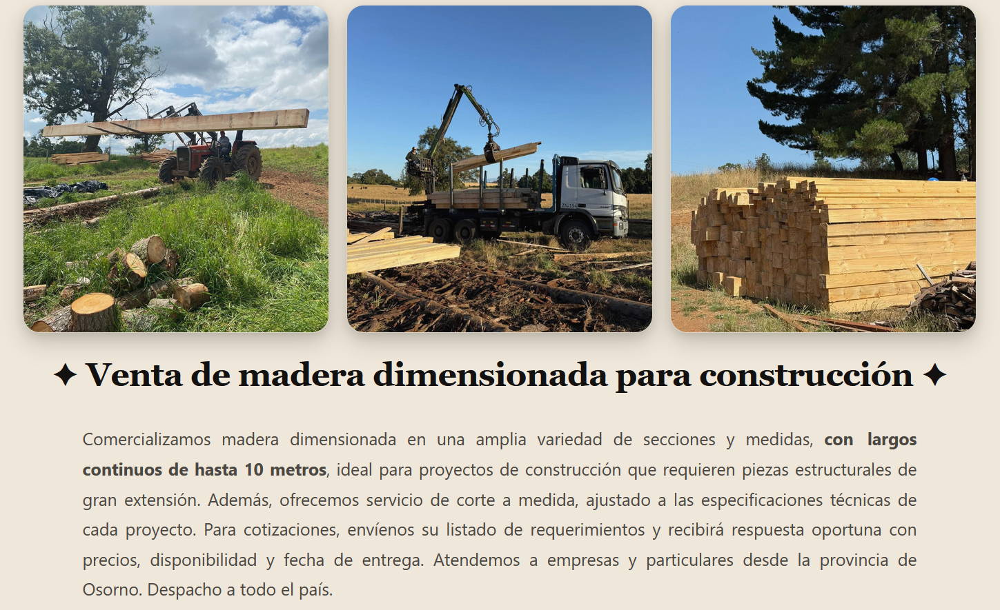

Agrícola Los Lingues — Sitio Web Corporativo
Proyecto Front-EndSitio web corporativo desarrollado para cliente real, enfocado en presentación visual del negocio, identidad de marca y experiencia responsive. Se trabajó estructura HTML semántica, organización CSS limpia y diseño adaptable.
WebFront-EndGit/GitHub